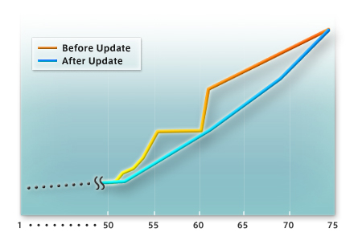
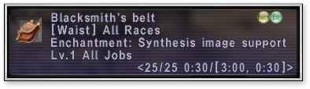

Several new Chains of Promathia area quests have been added.
A special new Ballista area has been added.
Click <<here>> for further details.
New sets of low-level equipment have been added to the list of armor that can be stored by certain NPCs located around Vana’diel. After trading a full set (4-5 pieces) of armor, a player will receive a “claim slip.” This claim slip and a small fee are required when having a set of armor returned.
Please note:
1. Signatures on checked armor will be lost.
2. High-quality and refurbished armor cannot be stored.
The clamming mini-game on Purgonorgo Isle has been expanded. The new features include:
1. A larger bucket offered to those who can fill the original bucket to the brim without going over its weight limit.
2. A larger variety of items that can be dug from the sand.
3. Less waiting time required to re-clam the same points.
New items are available for harvesting/mining in the following areas:
1. West Sarutabaruta
2. Newton Movalpolos
3. Giddeus
A new key item that will automatically inform players whether they have access to the Marble Bridge Tavern is now available (a message will appear upon entry into Upper Jeuno).
A new key item that will automatically inform players if a volunteer is needed for the “Community Service” quest is now available.
Under certain conditions, Tarnotik (located in Oldton Movalpolos) will now accept snow lilies as payment for teleportation to Mine Shaft #2716.
The number of items accepted by Yurim in the Tavnazian quest "In the Name of Science," as well as the types of rewards granted in exchange, have been increased.
Several new varieties of fish are now being accepted by Zaldon in the “Inside the Belly” quest.
The amount of EXP required for leveling up after lv.51, and the amount of EXP lost when KO’d after level 25, has been greatly reduced.
|  |
Several new types of ENM quests have been added. In addition, many of the existing quests have also been adjusted. Some of these adjustments include allowing larger parties and/or alliances to enter the battlefields (however, depending on the size of the parties, there may be a cut in the amount of EXP received when completing the quest).
| Area | Battle Name | Restrictions |
| Boneyard Gully | Like the Wind | 15 minutes/Lv.75/3 members recommended |
| Shell We Dance? | 30 minutes/Lv.75/12 members recommended | |
| Totentanz | 30 minutes/Lv.75/18 members recommended | |
| Mine Shaft #2716 | Pulling the Strings | 15 minutes/Lv.60/Solo battle |
| Automaton Assault | 15 minutes/Lv.60/3 members recommended/ All members must be of same race |
|
| Monarch Linn | Fire in the Sky | 15 minutes/Lv.40/3 members recommended |
| Bugard in the Clouds | 15 minutes/Lv.50/3 members recommended | |
| Beloved of the Atlantes | 30 minutes/Lv.50/6 members recommended |
| The recommended number of party members for all existing ENM battles has been set at 6, with the maximum alliance size being 18. |
New notorious monsters have been added to the Chains of Promathia areas.
The bard song Army's Paeon V (Lv. 65) has been added.
New mannequin poses have been introduced. After obtaining a mannequin and a certain key item, Mhauran goldsmith Fyi Chalmwoh will change the pose of your simulacrum upon request. Available poses are as follows:
1. /sit
2. /salute (Windurst/San d’Oria/Bastok)
3. /hurray
4. Special race-specific poses
Select guilds are now offering new key items available for purchase with guild points.
|  |
Adjustments and additions have been made to the types of items requested in exchange for guild points.
The Alchemists’ Guild will now accept poison baghnakhs +1 in exchange for guild points.
Several new fishing rods have been introduced.
New relic-type equipment has been added.
Numerous other types of items are also now available.
New synthesis and desynthesis recipes have been added.
The graphics displayed when a Galka equips the following shields have been changed:
Marine Shield
Shell Shield
Turtle Shield
Turtle Shield +1
Genbu's Shield
A new synthesis recipe for black ink has been introduced. In conjunction with this addition, the item's buying price has also been adjusted.
The following item names have been changed:
Ashigaru Gorget -> Agile Gorget
Mana Ring -> Mystical Ring
Mana Ring +1 -> Mystical Ring +1
The Handle Name screen that would appear during login has been removed. In its place, a simple confirmation message has been introduced.
Group Messages can now be viewed while logged in to FINAL FANTASY XI. However, players must return to PlayOnline to respond to them.
Several unused buttons within the Friend List menu, as well as the "Busy" and “Away Mess.” options under Online Status, have been removed.
In conjunction with the removal of the corresponding button, a player’s “Privacy Level” will now automatically be set to level 2 (all players on your Friend List).
The "Accept" button originally used during Friend List registration has been removed. The current options are "Accept & Add" and "Decline."
Also, when "Accept & Add" is selected by the invitee, both players will be automatically registered on each other's Friend List.
"/busy" has been removed from the Auto-Translate feature.
A confirmation message will now appear when purchasing goods from another player’s bazaar.
Example: Purchase 3 sleepshrooms for 570 gil?
Fishing locations in the following areas have been adjusted:
1. Beaucedine Glacier
2. Sauromugue Champaign
3. Ferries between Mhaura and Selbina
The more “tired” a player becomes after repeated fishing, the longer it will now take to recast his or her line.
Players will be “tired” for a short period of time after being raised.
New BGM is now played when battling it out with a bite.
New types of salt and freshwater fish, as well as rare “legendary” fish, have been added.
When a monster is caught, only the player who reeled it in (and his/her party or alliance) will be able to attack it (the monster's name will be displayed in red/purple).